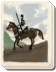

Basic Unit Statistics (can be modified by difficulty level, arts, skills, traits and retainers)
| Recruitment Cost | 1070 | |
| Upkeep Cost | 140 | |
| Melee Attack | 13 | 37% |
| Charge Bonus | 15 | 30% |
| Bonus vs Cavalry | 0 | 0% |
| Range | 125 | 19% |
| Accuracy | 30 | 30% |
| Reloading Skill | 75 | 75% |
| Ammunition | 40 | 50% |
| Melee Defence | 8 | 22% |
| Armour | 2 | 13% |
| Morale | 8 | 16% |
Strengths & Weaknesses
- Good accuracy and fast reload rate.
- Good in melee.
- Weak against missile attacks and spear units.
- Good morale.
Requires
- Buildings:
- Arts: 
Description
Carbine cavalry can deliver accurate and witheringly rapid fire.
Carbine cavalry can produce volleys of accurate, rapid and deadly fire. This allows them to act as fast-moving support units for attacks, and to shore up crumbling defensive positions. If necessary, they can dismount and act as infantry. Although they have good morale and are confident fighters in close combat, they are less effective against other cavalry. Like other cavalrymen, they die quickly if left exposed to massed rifle fire or artillery bombardment. A carbine was a shortened smoothbore musket for use by mounted troops. Trying to muzzle load a full length weapon and keep a horse under control in the middle of battle was difficult, to say the least, and the solution was to cut down the barrel. Over the years, the carbine was further redesigned to use a smaller calibre bullet, making it a lighter, handier weapon for a horseman. It was a natural progression to include breech-loading (with brass cartridges) in carbine design. The result was a weapon that was deadly in the right hands, but could be used from the back of a horse. If greater accuracy was needed, then carbine-armed soldiers could dismount and fight as dragoons. Oddly, much the same kind of process is going on today. Standard infantry rifles have become shorter over the last few years to make them easier to use in close urban combat and fire out of armoured personnel carriers. A number of very cut-down "commando" rifles have also been produced for tank crews. In the tight spaces of an armoured vehicle, it makes good sense to give your soldiers short guns.